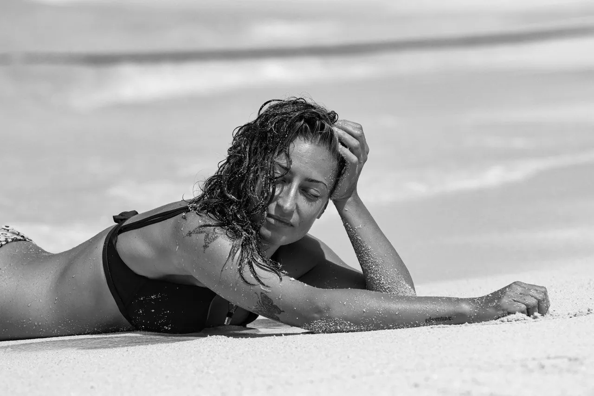

Derrière l'objectif
Bonjour ! Je suis Rosa
Marcher pieds nus, le sel sur la peau et près de la mer, comme mode de vie. Que ce soit mon uniforme de travail, c'est fou. Mes grandes passions sont la mer, la photographie et le sport. Pouvoir tout réunir et en faire mon métier en venant de Tolède, ce n'est pas une question de chance.
Je suis photographe, vidéaste et fondatrice de ma propre marque. Basée à Fuerteventura, je travaille depuis plus de huit ans dans le monde de la plongée et depuis plus de trois ans comme photographe professionnelle, en me faisant une place dans le monde du surf, sans cesser d'apprendre et en constante évolution.
Plus
L'océan m'a appris à ralentir dans un monde qui va vite, à attendre le bon moment pour déclencher et voir naître une image que mon esprit avait déjà imaginée. Mon bureau n'a ni murs ni plafond, parce que mon esprit n'en avait pas non plus lorsqu'il s'agissait de me fixer des limites de temps ou d'âge. Et vous ? Êtes-vous qui vous voulez être ? Il suffit d'en avoir envie, sans se presser.
Ma démarche
Figer un instant qui ne dure que quelques secondes, et émouvoir sans un mot celui qui veut le garder pour toujours.
Des moments vrais
Construire quelque chose qui a du sens.
Plus
Le vrai, c'est quelque chose de sincère, et c'est mon objectif en tant que professionnelle. Chaque projet commence par une déclaration d'intentions réciproque. Ce n'est qu'à partir de l'écoute et du respect que l'on peut construire des choses vraies et authentiques.
Toucher plus de monde
Si vous pouvez le rêver, vous pouvez le faire.
Plus
Je suis photographe sans avoir étudié la photographie. J'ai travaillé comme photographe sous-marine sans avoir pris une seule photo en surface. Il n'est jamais trop tard pour rien. Si vous ne savez pas comment débuter dans la photographie sous-marine, écrivez-moi et je vous raconte comment je l'ai fait.
Créer une communauté
Un troupeau de moutons noirs.
Plus
Si vous vous êtes déjà senti comme un mouton noir, sachez qu'il y a d'autres moutons noirs ailleurs. Si vous pensez que ce pourrait être une façon de commencer votre histoire, un endroit où débuter ou développer un métier, ou partager des voyages avec des gens tout aussi curieux, vous n'avez peut-être pas besoin de chercher plus loin.
- Où
- Espagne
- Dans l'eau
- Surf · Plongée · Apnée
- Langues
- English · Español